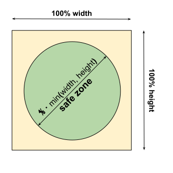

This specification defines a JSON-based file format that provides
developers with a centralized place to put metadata associated with a
web application. This metadata includes, but is not limited to, the web
application's name, links to icons, as well as the preferred URL to
open when a user launches the web application. The manifest also allows
developers to declare a default screen orientation for their web
application, as well as providing the ability to set the display mode
for the application (e.g., in fullscreen). Additionally, the manifest
allows a developer to "scope" a web application to a URL. This
restricts the URLs to which the manifest is applied and provides a
means to "deep link" into a web application from other applications.
Using this metadata, user agents can provide developers with means to
create user experiences that are more comparable to that of a native
application.
Web Application Manifest
A application manifest is a [[JSON]] document that
contains startup parameters and application defaults for when a web
application is launched.
As a manifest is JSON, this specification relies on the types defined
in [[JSON]] specification: namely object,
array, string, and boolean. Strict type
checking is not enforced by this specification. Instead, each member's
definition specifies the steps required to process a particular member
and what to do when a type does not match what is expected.
A manifest has an associated manifest URL, which is the
[[URL]] from which the manifest was fetched.
A [=manifest=] can have any of the following members at its root, all
of which are optional. The members can appear in any order.
[=manifest/background_color=]
[=manifest/dir=]
[=manifest/display=]
[=manifest/icons=]
[=manifest/identity=]
[=manifest/lang=]
[=manifest/name=]
[=manifest/orientation=]
[=manifest/prefer_related_applications=]
[=manifest/related_applications=]
[=manifest/scope=]
[=manifest/short_name=]
[=manifest/shortcuts=]
[=manifest/start_url=]
[=manifest/theme_color=]
Examples
This section shows how developers can make use of the various
features of this specification.
The example also shows how to use the link type "manifest" and how
to use other [^meta^] and [^link^] elements to give the web
application a fallback name and set of icons.
In the following example, the developer has made the following
choices about the icons associated with the web application:
The developer has included two icons at the same size, but in
two different formats. One is explicitly marked as WebP through the
`type` member. If the user agent doesn't support WebP, it falls
back to the second icon of the same size. The MIME type of
this icon can then be either determined via a HTTP header, or can
be sniffed by the user agent
once the first few bytes of the icon are received.
The developer wants to use an SVG for greater than or equal to
257x257px. They've found that the SVG file looks too blurry at
small sizes, even on high-density screens. To deal with this
problem, the developer includes an SVG icon that is only used when
the dimensions are at least 257px. Otherwise, the user agent uses
the ICO file (hd_hi.ico), which includes a gamut of raster icons
individually tailored for small display sizes.
In the following example, the developer has included two shortcuts.
Assuming the manifest's URL is
https://example.com/manifest.webmanifest:
The first shortcut would be displayed with the text "Play
Later". If the operating system supports icons for context menu
items and it also supports SVG images for that purpose, the user
agent would present
https://example.com/icons/play-later.svg next to the
text. When launched, the user agent would instantiate a new
top-level browsing context and navigate to
https://example.com/play-later.
The second shortcut would be displayed with the text
"Subscriptions". When launched, the user agent would instantiate a
new top-level browsing context and navigate to
https://example.com/subscriptions?sort=desc.
{
"shortcuts": [
{
"name": "Play Later",
"description": "View the list of podcasts you saved for later",
"url": "/play-later",
"icons": [
{
"src": "/icons/play-later.svg",
"type": "image/svg+xml"
}
]
},
{
"name": "Subscriptions",
"description": "View the list of podcasts you listen to",
"url": "/subscriptions?sort=desc"
}
]
}
Understanding "scope"
The [=manifest/scope=] member tells the browser which documents are
part of a web application, and which are not - and hence, to which
set of web pages the manifest is "[=applied=]" when the user
navigates around a web site.
For example, `{"scope": "/"}` means that the manifest applies to
every document in an origin. On the other hand, `{"scope":
"/racer/"}` means that only documents within the path "/racer/" are
[=URL/within scope=]: so "/racer/race1.html", "/racer/race2.html",
etc. would all be [=URL/within scope=], but "/elsewhere/" and
anything at the root "/" would be "out of scope" and the manifest
wouldn't apply to documents in those paths. Only one scope path is
supported. See [[[#nav-scope]]] for the technical details.
[=Applying=] a manifest means that any members that affect
presentation found in the manifest will come into effect, such as
display "fullscreen", or applying a particular screen orientation.
As long as the application is navigated to URLs that are
[=URL/within scope=], the browser will continue to apply the
manifest. However, navigating the web applications "out of scope"
will cause the manifest to no longer be applied, and the browser
will apply its own defaults. This will cause, for example, the
application to no longer be displayed in fullscreen, and instead be
displayed as a regular web page in a browser tab. It's left up to
implementers to decide how to deal with web pages being navigated
in and out of scope. See [[[#applying]]] for the technical details.
Finally, as it's possible that a user can install a web application
from any document within an origin, it's good practice to always
declare a [=manifest/scope=] member in a manifest. If the
[=manifest/scope=] member is missing from the manifest, then the
path of the [=manifest/start_url=] member is used as a fallback.
And if the [=manifest/start_url=] member is also missing, then the
document URL from which the web application is installed gets used
as the scope. To be sure you don't get any unexpected navigation
behavior, always include a [=manifest/scope=] member preferably set
to `"/"`.
Otherwise the base direction is "[=auto=]", in which case
determine the text's direction by applying Rule P1 of [[BIDI]].
To process the `dir` member, given [=object=] |json:JSON|
and [=ordered map=] |manifest:ordered map|:
If the type of |json|["dir"] is not [=string=], or if
|json|["dir"] doesn't match one of the [=text-direction values=],
return.
Set |manifest|["dir"] to |json|["dir"].
`lang` member
The [=manifest's=] lang member is a string in the form of
a language tag that specifies the primary language for the
values of the manifest's localizable members (as knowing the
language can also help with directionality).
A language tag is a string that matches the
production of a `Language-Tag` defined in the [[BCP47]]
specifications (see the IANA
Language Subtag Registry for an authoritative list of possible
values). That is, a language range is composed of one or more
subtags that are delimited by a U+002D HYPHEN-MINUS ("-").
For example, the '`en-AU`' language range represents English as
spoken in Australia, and '`fr-CA`' represents French as spoken in
Canada. Language tags that meet the validity criteria of [[RFC5646]]
section 2.2.9 that can be verified without reference to the IANA
Language Subtag Registry are considered structurally valid.
To process the `lang` member, given [=object=] |json:JSON|
and [=ordered map=] |manifest:ordered map|:
If the type of |json|["lang"] is not [=string=], return.
Set |manifest|["lang"] to the result of calling the
CanonicalizeUnicodeLocaleId
abstract operation with |json|["lang"].
`name` member
The [=manifest's=] name member is a string that
represents the name of the web application as it is usually displayed
to the user (e.g., amongst a list of other applications, or as a
label for an icon).
The [=manifest/name=] member serves as the accessible name of an
[=installed web application=].
When [=processing a manifest=], the [=process a text member=]
algorithm is used to process the [=manifest/name=] member.
`short_name` member
The [=manifest's=] short_name member is a string that
represents a short version of the name of the web application. It is
intended to be used where there is insufficient space to display the
full name of the web application.
When [=processing a manifest=], the [=process a text member=]
algorithm is used to process the [=manifest/short_name=] member.
`scope` member
The [=manifest's=] scope member is a string that
represents the [=manifest/navigation scope=] of this web
application's application context.
To process the `scope` member, given [=object=]
|json:JSON| and [=ordered map=] |manifest:ordered map|:
Set |manifest|["scope"] to the result of [=URL Parser|parsing=]
"." with |manifest|["start_url"] as the base URL.
If |json|["scope"] is the empty string, then return.
Let |scope:URL| be the result of [=URL Parser|parsing=]
|json|["scope"] with |manifest URL| as the base URL.
If |scope| is failure, return.
From |scope|, remove the [=url/query=] and [=url/fragment=]
components.
If |manifest|["start_url"] is not [=URL/within scope=] of
|scope|, return.
Otherwise, set |manifest|["scope"] to |scope|.
`icons` member
The [=manifest's=] icons member are images that serve as iconic
representations of the web application in various contexts. For
example, they can be used to represent the web application amongst a
list of other applications, or to integrate the web application with
an OS's task switcher and/or
system preferences.
If there are multiple equally appropriate images in
[=manifest/icons=], a user agent MUST use the last one declared in
order at the time that the user agent collected the list of
[=manifest/icons=]. If the user agent tries to use an icon but that
icon is determined, upon closer examination, to be inappropriate
(e.g. because its content type is unsupported), then the user agent
MUST try the next-most-appropriate icon as determined by examining
the [=manifest image resource=]'s members.
`display` member
The [=manifest's=] display member represents the developer's
preferred display mode for the web application. Its value is
one of the display modes values.
To process the `display` member, given [=object=]
|json:JSON| and [=ordered map=] |manifest:ordered map|:
If the type of |json|["display"] is not [=string=], return.
If |json|["display"] doesn't match one of the [=display modes
values=], return.
Set |manifest|["display"] to |json|["display"].
`orientation` member
The [=manifest's=] orientation member is a string that
serves as the default screen orientation for all top-level
browsing contexts of the web application. The possible values are
those of the {{OrientationLockType}} enum, which in this
specification are referred to as the orientation values
(i.e., "any", "natural", "landscape", "portrait", "portrait-primary",
"portrait-secondary", "landscape-primary", or "landscape-secondary").
Although the specification relies on the [[SCREEN-ORIENTATION]]'s
{{OrientationLockType}}, it is OPTIONAL for a user agent to implement
the [[SCREEN-ORIENTATION]] API. Supporting the [[SCREEN-ORIENTATION]]
API is, of course, encouraged.
Certain UI/UX concerns and/or platform conventions will mean that
some screen orientations and display modes cannot be used
together. Which orientations and display modes cannot be used
together is left to the discretion of implementers. For example, for
some user agents, it might not make sense to change the default
screen orientation of an application while in `browser`
display mode.
Once the web application is running, other means can change the
orientation of a top-level browsing context (such as via
[[SCREEN-ORIENTATION]] API).
To process the `orientation` member, given JSON
|json:JSON| and [=ordered map=] |manifest:ordered map|:
If the type of |json|["orientation"] is not [=string=], return.
If |json|["orientation"] doesn't match one of the [=orientation
values=], return.
Set |manifest|["orientation"] to |json|["orientation"].
`start_url` member
The [=manifest's=] start_url member is a string that
represents the start URL , which is URL that the
developer would prefer the user agent load when the user launches the
web application (e.g., when the user clicks on the icon of the web
application from a device's application menu or homescreen).
The [=manifest/start_url=] member is purely advisory, and a user
agent MAY ignore it or provide the end-user the choice not to
make use of it. A user agent MAY also allow the end-user to modify
the URL when, for instance, a bookmark for the web application is
being created or any time thereafter.
To process the `start_url` member, given [=object=]
|json:JSON|, [=ordered map=] |manifest:ordered map|, [=URL=]
|manifest URL:URL|, and [=URL=] |document URL:URL|:
If the type of |json|["start_url"] is not [=string=], return.
If |json|["start_url"] is the empty string, return.
Let |start URL:URL| be the result of [=URL Parser|parsing=]
|json|["start_url"], using |manifest URL| as the base URL.
If |start URL| is failure, return.
If |start URL| is not same origin as document
URL, return.
Otherwise, set |manifest|["start_url"] to |start URL|.
It's conceivable that the [=manifest/start_url=] could be crafted
to indicate that the application was launched from outside the
browser (e.g., `"start_url": "index.html?launcher=homescreen"`).
This can be useful for analytics and possibly other customizations.
However, it is also conceivable that developers could encode
strings into the start_url that uniquely identify the user (e.g., a
server assigned UUID). This is fingerprinting/privacy
sensitive information that the user might not be aware of.
Given the above, it is RECOMMENDED that, upon installation, or any
time thereafter, a user agent allows the user to inspect and, if
necessary, modify the start URL of an application.
`id` member
The [=manifest's=] id member is a string that
represents the identity for the application.
The |identity| takes the form of a URL, which is same origin as the
start URL.
The |identity| is used by user agents to uniquely identify the
application universally. When the user agent sees a manifest with an
|identity| that does not correspond to an already-installed application,
it SHOULD treat that manifest as a description of a distinct
application, even if it is served from the same URL as that of another
application. When the user agent sees a manifest with an |identity|
matching that of an already-installed application, it SHOULD be used as
a signal that this manifest is a replacement for the already-installed
application's manifest, and not a distinct application, even if it is
served from a different URL than the one seen previously.
The |identity| MAY be used by a service that collects lists of web
applications to uniquely identify applications.
To process the `id` member, given [=object=]
|json:JSON|, [=ordered map=] |manifest:ordered map|:
Set |manifest|["id"] to |manifest|["start_url"].
If the type of |json|["id"] is not [=string=], return.
Let |id:URL| be the result of [=URL Parser|parsing=] |json|["id"]
with |manifest|["start_ur"]'s origin as the base URL.
If |id| is not same origin as |manifest|["start_url"], return.
If |id| is failure, return.
`theme_color` member
The [=manifest's=] theme_color member serves as the default
theme color for an application context. What constitutes a
theme color is defined in [[HTML]].
If the user agent honors the value of the [=manifest/theme_color=]
member as the default theme color, then that color serves as
the theme color for all browsing contexts to which the
manifest is applied. However, a document may override the
default theme color through the inclusion of a valid [[HTML]]
[^meta^] element whose [^meta/name^] attribute value is
`"theme-color"`.
The user agent MAY ignore the theme color's [=alpha
component=] based on the context. For example, in most environments,
the theme color cannot be transparent.
Implementors MAY override the value defined by the
[=manifest/theme_color=] member to support prefers-color-scheme.
When [=processing a manifest=], the [=process a color member=]
algorithm is used to process the [=manifest/theme_color=] member.
`related_applications` member
A related application is an application accessible to the
underlying application platform that has a relationship with the web
application.
The [=manifest's=] related_applications member lists related
applications and serves as an indication of such a relationship
between web application and related applications. This
relationship is unidirectional and unless a listed application claims
the same relationship, the user agent MUST NOT assume a
bi-directional endorsement.
Example of usages of the `related_applications` could be a crawler
that would use that information to gather more information about the
web application or a browser that could suggest a listed application
as an alternative if the user wants to install the web application.
To process the `related_applications` member, given
[=object=] |json:JSON| and [=ordered map=] |manifest:ordered map|:
Let |relatedApplications:list| be a new [=list=].
Set |manifest|["related_applications"] to |relatedApplications|.
If the type of |json|["related_applications"] is not [=array=],
return.
[=list/For each=] app of
|json|["related_applications"]:
The [=manifest's=] `prefer_related_applications` member is a
[=boolean=] that is used as a hint for the user agent to say that
related applications should be preferred over the web
application. If the `prefer_related_applications` member is set to
`true`, and the user agent wants to suggest to install the web
application, the user agent might want to suggest installing one of
the related applications instead.
`background_color` member
The [=manifest's=] `background_color` member describes the
expected background color of the web application. It repeats what is
already available in the application stylesheet but can be used by
the user agent to draw the background color of a web
application for which the manifest is known before the files are
actually available, whether they are fetched from the network or
retrieved from disk.
The [=manifest/background_color=] member is only meant to improve the
user experience while a web application is loading and MUST NOT be
used by the user agent as the background color when the web
application's stylesheet is available.
Implementors MAY override the value defined by the
[=manifest/background_color=] member to support prefers-color-scheme.
When [=processing a manifest=], the [=process a color member=]
algorithm is used to process [=manifest/background_color=] member.
`shortcuts` member
The [=manifest's=] shortcuts member is an [=array=] of
shortcut items that provide access to key tasks within a web
application.
How shortcuts are presented, and how many of them are shown to the
user, is at the discretion of the user agent and/or operating system.
To process the `shortcuts` member, given [=object=]
|json:JSON|, |manifest:ordered map|, and |manifest URL:URL|:
Let |processedShortcuts:list| be a new [=list=].
Set |manifest|["shortcuts"] to |processedShortcuts|.
If the type of |json|["shortcuts"] is not [=array=], return.
[=list/For each=] |entry:object| of |json|["shortcuts"]:
Let |shortcut:Ordered map| be [=process a shortcut=] with
|entry|.
If |shortcut| is failure, continue.
[=list/Append=] |shortcut| to |processedShortcuts|.
A user agent SHOULD expose shortcuts via interactions that are
consistent with exposure of an application icon's context menu in the
host operating system (e.g., right click, long press). A user agent
SHOULD render the shortcuts in the same order as they are provided in
the manifest. A user agent SHOULD represent the shortcuts in a manner
consistent with exposure of an application icon's context menu in the
host operating system. A user agent MAY truncate the list of
shortcuts presented in order to remain consistent with the
conventions or limitations of the host operating system.
Manifest life-cycle
This section defines algorithms for [=processing a manifest=], and
applying a manifest.
A user agent MUST support the link type "manifest" and the associated
steps for how to fetch and process the linked resource.
Processing the manifest
When instructed to ignore, the user agent MUST act as if
whatever manifest, member, or value caused the condition is absent.
The following algorithm provides an processing
extension-point: other specifications that add new members to
the manifest are encouraged to hook themselves into this
specification at this point in the algorithm. They SHOULD NOT
modify the existing values already in the manifest
object.
The steps for processing a manifest are given by the following
algorithm. The algorithm takes [^link^] |el:HTMLLinkElement| and a
[=Response=] |response|.
Let |document URL:URL| be |el|'s [=Node/node document=]'s
[=Document/URL=].
Assert: |document URL:URL| is not null.
Let |json| be the result of [=parse JSON from bytes=]
|response|'s [=response/body=].
If the |json| is a parsing exception, or the type of |json| is
not [=object=]:
Set |json:object| to an empty [=object=] (i.e., equivalent
of JSON parsing the string `"{}"`).
Let |manifest| be a new [=ordered map=] «[ "display" →
"browser", "dir" → "auto", "start_url" → |document URL| ]».
[=Process the `dir` member=] passing |json| and |manifest|.
[=Process the `lang` member=] passing |json| and |manifest|.
[=list/For each=] |member:string| of [=list=] « "name",
"short_name" »:
[=Process a text member=] passing |json|, |manifest|, and
|member|.
[=Process a text member=] passing |json|, |manifest|, and
"short_name".
[=Process the `start_url` member=] passing |json|, |manifest|,
|manifest URL|, and |document URL|.
[=Process the `id` member=] passing |json|, |manifest| and
|document URL|.
[=Process the `scope` member=] passing |json|, |manifest|, and
|manifest URL|.
[=list/For each=] |member:string| of [=list=] « "theme_color",
"background_color" »:
[=Process a color member=] passing |json|, |manifest|, and
|member|.
[=Process the `display` member=] passing |json| and |manifest|.
[=Process image resources=] passing |json|["icons"],
|manifest|, |manifest URL|, and "icons".
[=Process the `orientation` member=] passing |json|,
|manifest|.
[=Process the `related_applications` member=] passing |json|
and |manifest|.
[=Process the `shortcuts` member=] passing |json|, |manifest|,
and |manifest URL|.
[=application manifest/Processing extension-point=]: process
any proprietary and/or other supported members at this point in the
algorithm.
Let [=document=]'s processed
manifest be |manifest|.
Processing color members
Only [=sRGB=] colors, and colors the user agent can convert to
[=sRGB=] without any outside knowledge (e.g., `"AliceBlue"`), are
supported. For example, `lab(…)` or `color(display-p3, …)` can be
converted to [=sRGB=] without outside knowledge, but
`color(--custom-profile, …)` would require finding a matching
"@color-profile" rule which cannot be specified in the manifest.
To process a color member, using JSON |json:JSON|,
[=ordered map=] |map:ordered map|, and [=string=] |member:string|:
If the type of |json|[member] is not [=string=], return.
Let |color| be the result of [=CSS/parsing=] the value of
|json|[member] as a CSS color.
If |color| is failure, return.
If |color| can be converted to [=sRGB=] using solely
information the user agent inherently knows, then convert |color|
to [=sRGB=].
If |color| is not [=sRGB=] color, return.
Set |map|[member] to |color|.
Processing text members
To process a text member, given [=object=] |json:JSON|,
[=ordered map=] |map:ordered map|, and [=string=] |member:string|:
If the type of |json|[|member|] is not [=string=], return.
Set |map|[member] to the value of |json|[|member|].
Applying the manifest
A [=Document/processed manifest=] is applied to a top-level
browsing context, meaning that the members of the
[=Document/processed manifest=] are affecting the presentation or
behavior of a browsing context.
A top-level browsing context that has a manifest applied to
it is referred to as an application context.
If an application context is created as a result of the user
agent being asked to navigate to a deep link, the
user agent MUST immediately navigate to the deep link
with historyHandling set to "`replace`". Otherwise, when
the application context is created, the user agent MUST
immediately navigate to the start URL with
historyHandling set to "`replace`".
The appropriate time to apply a manifest is when the
application context is created and before
[=navigate|navigation=] to the start URL begins.
Updating the manifest
User agents MAY, at any time, re-fetch and update a manifest for an
installed web application and apply updated manifest to any current
and future application contexts associated with the
application. When the user agent fetches a manifest as part of an
update check, it MUST compare the fetched processed manifest's
[=manifest/identity=] with the identity of the app being updated. If
it is not equal, the user agent MUST NOT update the installed
application's manifest.
Manifest image resources
Each manifest image resource is an [=image resource=] that
is conceptually part of a web application, suitable to use in various
contexts depending on the semantics of the member that is using the
object (e.g., an icon that is part of an application menu, etc.).
A [=manifest image resource=] differs from a [=image resource=] in that
it can have an additional [=manifest image resource/purpose=] member.
User agents MAY modify the images associated with an [=manifest image
resource=] to better match the platform’s visual style before
displaying it to the user, for example by rounding the corners or
painting it in a specific color. It is recommended that developers
prepare their image resources for such scenarios to avoid losing
important information through, e.g., change of color or clipped
corners.
When a [=manifest image resource=] is used as an icon, a
developer can hint that the image is intended to serve some special
purpose in the context of the host OS (i.e., for better integration).
User agents SHOULD NOT use an icon other than for its stated icon
purpose.
For example, an icon with purpose "monochrome" could be used
as a badge or pinned icon with a solid fill, visually distinct from
an application's full color launch icon. The user agent uses the
value of the [=manifest image resource/purpose=] member as a hint to
determine where and how an [=manifest image resource/purpose=] is
displayed. Unless declared otherwise by the developer, a user agent
can use an icon for [=any|any purpose=].
The icon purposes are as follows:
"monochrome"
A user agent can present this icon where a monochrome icon with a solid
fill is needed. The color information in the icon is discarded
and only the alpha data is used. The icon can then be used by the
user agent like a mask over any solid fill.
"maskable"
The image is designed with icon masks and
safe zone in mind, such that any part of the image that is
outside the safe zone can safely be ignored and masked away
by the user agent.
"any" (default)
The user agent is free to display the icon in any context.
If an icon contains multiple purposes, it could be used for any of
those purposes. If none of the stated purposes are recognized, the
icon is totally ignored. For example, if an icon has purpose
`"monochrome fizzbuzz"`, then it could be used as a monochrome icon,
as `"monochrome"` is a valid purpose. However, if an icon just has
the purpose `"fizzbuzz"`, then it will be ignored.
To determine the purpose of an image, given [=object=]
|json:image|:
If the type of |json|["purpose"] is not [=string=]:
Return [=set=] « "any" ».
Let |keywords:list<string>| be the result of [=split on
ASCII whitespace=] |json|["purpose"].
Let |purposes:set| be new [=set=].
[=set/For each=] |keyword:string| of |keywords|:
If |keyword| is not one of the [=icon purposes=], then
[=iteration/continue=].
Otherwise, [=set/append=] |keyword| to |purposes|.
If |purposes| [=list/is empty=], then return failure.
Return |purposes|.
Content security policy
The security policy that governs whether a user agent can
fetch an icon image is governed by the `img-src` directive [[CSP3]]
associated with the manifest's owner {{Document}}.
Icon masks and safe zone
Some platforms have their own preferred icon shape, but as web
applications should work across multiple platforms, it is possible to
indicate that an icon can have a user-agent-specified mask applied by
adding the maskable purpose. This allows the platform to
ensure that the icon looks well integrated with the platform, and
even apply different masks and background colors in different places
throughout the platform.
The safe zone is the area within a maskable icon
which is guaranteed to always be visible, regardless of user agent
preferences. It is defined as a circle with center point in the
center of the icon and with a radius of 2/5 (40%) of the icon size,
which means the smaller of the icon width and height, in case the
icon is not square.
Designers of maskable icons will want to make sure that all
important parts are within the safe zone.

The safe zone is a centrally positioned circle, with radius 2/5
(40%) of the minimum of the icon's width and height.
All pixels in this zone are guaranteed to be seen in all masks.
Pixels outside the safe zone are not guaranteed to (but can) be
visible depending on the applied mask.
The user agent MAY apply a mask of any size, making any pixels that
are more than 2/5ths of the image size (minimum of width and height
if non-square) away from the center (the safe zone)
transparent.
The user agent MUST NOT make any pixel within the safe zone
transparent.
The user agent MAY enlarge the icon by adding additional padding.
If the icon contains transparent pixels, the user agent MUST
composite the icon onto a solid fill (e.g., white) of the user
agent's choice.
It is suggested that designers avoid using transparent pixels in
maskable icons.
Examples of masks
By staying inside the safe zone, most icons will have around
10% padding on the top, bottom, right and left with no content or
non-essential content, such as an icon background. It is suggested
that developers check their icon when all but the safe zone is
masked out.
Icons with "maskable" purpose
ImageThe base image with
transparent backgroundSafe zoneCircle with
radius 2/5 (40%) of the icon size
Some platforms enforce that icons be displayed with a solid
fill such as a single color, where only the transparency of the
icon can be declared in a [=manifest=]. As web applications need to
work across multiple platforms, it is possible to indicate that an
icon can have an user-agent-specified color applied by adding the
monochrome purpose. This allows the platform to ensure that
the icon looks well integrated with the platform, and even apply
different colors and padding in different places throughout the
platform.
When presenting a monochrome icon, the user agent MUST NOT
independently display the red component, green component, or blue
component of a pixel. The user agent SHOULD display each pixel with
its original alpha value, but with a red, green, and blue value of
the user agent's choosing. It is RECOMMENDED that the user agent use
the same color value for all pixels.
Designers of monochrome icons could set all pixels to black
and only use transparency to create a silhouette of their icon.
The user agent MAY enlarge the icon by adding additional padding.
The user agent MAY add a background of any color behind transparent
pixels, and SHOULD ensure that the background has sufficient contrast
with the icon.
Example usage of monochrome icons
Usage examples
ImageThe base image with
no color.Gradient fillThe image
filled in with a gradient.Solid color fill with paddingFilled in with the theme color from the manifest.
Processing image resources
To process image resources, given [=array=]
|images:array|, [=ordered map=] |map:ordered map|, |manifest URL:URL|
and [=string=] |member:string|:
Let |imageResources:List<Image Resources>| be a new
[=list=].
Set |map|[member] to |imageResources|.
If the type of |images| is not [=array=], return.
[=list/For each=] |potential image:Manifest image resource| of
|images|:
Let |image:ordered map| be the result of running [=process an
image resource from JSON=] given |potential image| and |manifest
URL|.
If |image| is failure, [=iteration/continue=].
Let |purposes:set| be [=determine the purpose of an image=]
passing |potential image|.
If |purposes| is failure, [=iteration/continue=].
Set |image|["purpose"] to |purposes|.
[=list/Append=] |image| to |imageResources|.
Shortcut items
Each shortcut item is an
[=object=] that represents a link to a key task or page within a web
app. It has the following members:
[=shortcut item/name=]
[=shortcut item/short_name=]
[=shortcut item/description=]
[=shortcut item/url=]
[=shortcut item/icons=]
A user agent can use these members to assemble a context menu to be
displayed by the operating system when a user engages with the web
app's icon. When the user invokes a shortcut from the operating system
menu, the user agent SHOULD run launching a shortcut.
`name` member
The [=shortcut item's=] name member is a string that
represents the name of the shortcut as it is usually displayed to the
user in a context menu.
`short_name` member
The [=shortcut item's=] short_name member is a string
that represents a short version of the name of the shortcut. It is
intended to be used where there is insufficient space to display the
full name of the shortcut.
`description` member
The [=shortcut item's=] description member is a string
that allows the developer to describe the purpose of the shortcut.
User agents MAY expose this information to assistive technology.
`url` member
The [=shortcut item's=] url member is a URL [=manifest/within
scope=] of a [=Document/processed manifest=] that opens when the
associated shortcut is activated.
`icons` member
The shortcut item's icons member lists images that serve as
iconic representations of the shortcut in various contexts.
Launching a shortcut
When shortcut itemshortcut having
manifest is invoked, run the following steps:
To process a shortcut, given [=object=] |item:object|:
If the type of |item| is not [=object=], return failure.
If |item|["name"] is missing or |item|["name"] is the empty
string, return failure.
If the type of |item|["url"] is not [=string=], return failure.
Let |url:URL| be the result of [=URL Parser|parsing=]
|item|["url"] with |manifest URL| as the base URL.
If |url| is failure, return failure.
If |url| is not [=manifest/within scope=] of |manifest URL|,
return failure.
Let |shortcut:ordered map| be |ordered map| «[ "url" → |url|,
"name" → |item|["name"] ]».
[=Process image resources=] passing |item|["icons"], |shortcut|,
|manifest URL|, and "icons".
Return |shortcut|.
External application resource
Each external
application resource represents an application related to the web
application.
An [=external application resource=] can have the following members,
some of which are required to be a [=valid external application
resource=]:
[=external application resource/fingerprints=] member
[=external application resource/id=] member
[=external application resource/min_version=] member
[=external application resource/platform=] member
[=external application resource/url=] member
A valid external application resource MUST have [=external
application resource/platform=] member, and either an [=external
application resource/url=] or an [=external application resource/id=]
member (or both).
`platform` member
The platform member
represents the [=platform=] this [=external application resource=] is
associated with. A platform represents a
software distribution ecosystem or possibly an operating system. This
specification does not define the particular values for the
platform member.
`url` member
An [=external application resource's=] url member is the
URL where the application can be found.
To process the `url` member of an application:
If application URL is missing, return null.
Otherwise, [=URL Parser|parse=] application URL and if
the result is not failure, return the result. Otherwise return null.
`id` member
An [=external application resource's=] id member represents the
id which is used to represent the application on the platform.
`min_version` member
An [=external application resource's=] min_version member
represents the minimum version of the application that is considered
related to this web app. This version is a string with
platform-specific syntax and semantics.
`fingerprints` member
An [=external application resource's=] fingerprints member
represents an array of [=fingerprints=].
A fingerprint represents a
set of cryptographic fingerprints used for verifying the application.
A fingerprint has the following two members: type and value. Each of these are strings, but
their syntax and semantics are platform-defined.
Installable web applications
A common use case of a manifest is for a user agent to
install a web application; whereby the user agent
provides the end-user with a means of instantiating a new top-level
browsing context that has the manifest's members applied to
it. A web application that is installed is known as a installed web application. That is, the manifest's members, or
their defaults, are in effect on the top-level browsing context.
This distinguishes an installed web application from a traditional
bookmark, as opening a web page from a traditional bookmark will not
have the manifest's properties applied to it.
For example, on user agents that support installation, a web
application could be presented and launched in a way that, to the
end-user, is indistinguishable from native applications: such as
appearing as a labeled icon on the home screen, launcher, or start
menu. When launched, the manifest is applied by the user agent
to the top-level browsing context prior to the start URL
being loaded. This gives the user agent an opportunity to apply the
relevant values of the manifest, possibly changing the display
mode and screen orientation of the web application. Alternatively,
and again as an example, the user agent could install the web
application into a list of bookmarks within the user agent itself.
Application's name
The application's name is derived from either the
[=manifest/name=] member or [=manifest/short_name=] member.
When either the [=manifest/name=] member or the
[=manifest/short_name=] member is missing, empty, or the wrong type,
a user agent MAY use the [=manifest/name=] member as a fallback for
the [=manifest/short_name=] member or [=manifest/short_name=] member
as the fallback for the [=manifest/name=] member.
If the [=manifest/name=] and [=manifest/short_name=] members are
missing, empty, or the wrong type, a user agent MAY fallback to the
{{Document}} to find suitable replacements for missing manifest
members (e.g., using `application-name` in place of [=manifest/name=]
or [=manifest/short_name=]). Alternatively, the user agent SHOULD
assign a default name (e.g., "Untitled") that follows platform
conventions. Alternatively, a user agent MAY allow the end-user to
input some text that can serve as the application's name.
When both the [=manifest/name=] and [=manifest/short_name=] members
are present, it is left up to implementations to decide which member
is best suited for the space available (e.g., the
[=manifest/short_name=] member might be better suited for the space
available underneath an icon).
Privacy and security considerations
It is RECOMMENDED that UI that affords the end user the ability to
install a web application also allows inspecting the icon,
name, start URL, origin, etc. pertaining to a web application.
This is to give an end-user an opportunity to make a conscious
decision to approve, and possibly modify, the information pertaining
to the web application before installing it. This also gives the
end-user an opportunity to discern if the web application is spoofing
another web application, by, for example, using an unexpected icon or
name.
It is RECOMMENDED that user agents prevent other applications from
determining which applications are installed on the system (e.g., via
a timing attack on the user agent's cache). This could be done by,
for example, invalidating from the user agent's cache the resources
linked to from the manifest (for example, icons) after a web
application is installed - or by using an entirely different
cache from that used for regular web browsing.
Uninstallation
User agents SHOULD provide a mechanism for the user to remove an
installed web application application.
It is RECOMMENDED that at the time of removal, the user agent also
present the user with an opportunity to revoke other persistent data
and settings associated with the application, such as permissions and
persistent storage.
Navigation scope
The navigation scope of a manifest is the "scope" item
of a [=Document/processed manifest=]. The navigation scope restricts
the set of URLs to which an [=application context=] can be
[=navigated=] while the manifest is [=applied=].
If the [=manifest/scope=] member is not present in the manifest, it
defaults to the parent path of the [=manifest/start_url=] member. For
example, if [=manifest/start_url=] is `/pages/welcome.html`, and
[=manifest/scope=] is missing, the navigation scope will be `/pages/`
on the same origin. If [=manifest/start_url=] is `/pages/` (the
trailing slash is important!), the navigation scope will be
`/pages/`.
Developers should take care, if they rely on the default behavior,
that all of the application's page URLs begin with the parent path of
the start URL. To be safe, explicitly specify [=manifest/scope=].
A [=URL=] |target:URL| is said to be within scope of [=URL=] |scope:URL| if the
following algorithm returns `true`:
If |target| and |scope| are not [=same origin=], return `false`.
Let |scopePath:string| be the [=string/concatenation=] of
|scopes|'s [=URL/path=] using U+002F (/) as the separator.
Let |targetPath:string| be the [=string/concatenation=] of
|target|'s [=URL/path=] using U+002F (/) as the separator.
Return a [=boolean=] indicating whether |targetPath| starts with
|scopePath:string|.
A [=URL=] |target:URL| is within scope of a
|manifest:processed manifest| if the |target| is [=URL/within scope=]
of |manifest|'s [=manifest/navigation scope=] (i.e., [=URL/within
scope=] of |manifest|'s [=manifest/scope=] member).
If the [=application context=]'s [=active document=]'s [=Document/URL=]
is not [=manifest/within scope=] of the [=application context=]'s
[=Document/processed manifest=], the user agent SHOULD show a prominent
UI element indicating the [=Document/URL=] or at least its [=origin=],
including whether it is served over a secure connection. This UI SHOULD
differ from any UI used when the [=Document/URL=] is [=manifest/within
scope=] of the [=application context=]'s [=Document/processed
manifest=], in order to make it obvious that the user is navigating off
scope.
Security considerations
The above recommendation (to show some UI when the application
context is navigated to an out-of-scope URL) is for
security reasons. It ensures that users are always aware of which
origin they are interacting with.
Despite this, there is still a potential spoofing risk, if an
installed app pretends to navigate to an out-of-scope site on another
origin. The site shows a fake version of the user agent's
prominent out-of-scope UI, indicating to the user that it is on
another origin. However, in reality, the user has never navigated
away from the installed app's origin, and the user agent is not
showing any out-of-scope UI. User agents could try to show the
out-of-scope UI in a way that cannot be spoofed by the installed app.
However, due to the nature of the user agent's UI being minimal or
non-existent for installed apps, this may not be possible.
Deep links
A deep link is a URL that is [=manifest/within scope=] of
an [=installed web application=]'s [=Document/processed manifest=].
An application context can be instantiated through a deep
link, in which case, the manifest is applied and the deep
link is loaded within the context of a web application.
Display modes
A display mode represents how the web application is being
presented within the context of an OS (e.g., in fullscreen, etc.).
Display modes correspond to user interface (UI) metaphors and
functionality in use on a given platform. The UI conventions of the
display modes are purely advisory and implementers are free to
interpret them how they best see fit.
When the [=manifest/display=] member is missing, or if there is no
valid [=manifest/display=] member, the user agent uses the
browserdisplay mode as the default display mode.
As such, the user agent MUST support the browserdisplay
mode.
Every [=display mode=] has a fallback chain, which is a list
of [=display modes=]. The [=fallback chain=] for:
[=browser=] is «».
[=minimal-ui=] is « "[=browser=]" ».
[=standalone=] is « "[=minimal-ui=]", "[=browser=]" ».
[=fullscreen=] is « "[=standalone=]", "[=minimal-ui=]",
"[=browser=]" ».
The steps for determining the web app's chosen display mode
is given by the following algorithm. The algorithm takes a
[=Document/processed manifest=] |manifest:processed manifest| and
returns a [=display mode=].
[=application manifest/processing extension-point=]: process any
proprietary and/or other supported display modes at this point in the
algorithm.
If the user agent supports |manifest|["display"], then return
|manifest|["display"].
[=list/For each=] |fallback_mode| of the [=fallback chain=] of
|manifest|["display"]:
If the user agent supports the |fallback_mode|, then return
|fallback_mode|.
The above loop is guaranteed to return a value before the assertion,
due to the fact that {{browser}} is in every mode's [=fallback chain=],
and the requirement that all user agents support the {{browser}}
[=display mode=].
The display modes values are:
"fullscreen"
Opens the web application with browser UI elements hidden and takes
up the entirety of the available display area.
"standalone"
Opens the web application to look and feel like a standalone native
application. This can include the application having a different
window, its own icon in the application launcher, etc. In this mode,
the user agent will exclude standard browser UI elements such as an
URL bar, but can include other system UI elements such as a status
bar and/or system back button.
"minimal-ui"
This mode is similar to standalone, but provides the end-user
with some means to access a minimal set of UI elements for
controlling navigation (i.e., back, forward, reload, and perhaps some
way of viewing the document's address). A user agent can include
other platform specific UI elements, such as "share" and "print"
buttons or whatever is customary on the platform and user agent.
"browser" (default)
Opens the web application using the platform-specific convention for
opening hyperlinks in the user agent (e.g., in a browser tab or a new
window).
The fullscreendisplay mode is orthogonal to, and works
independently of, the [[[FULLSCREEN]]]. The fullscreendisplay mode affects the fullscreen state of the browser window,
while the [[FULLSCREEN]] API operates on an element contained within
the viewport. As such, a web application can have its display
mode set to fullscreen, while `document.fullScreenElement`
returns `null`, and `fullscreenEnabled` returns `false`.
The `display-mode` media feature represents, via a CSS media query
[[MEDIAQ]], the display mode of the web application. This
media feature applies to the top-level browsing context and any child
browsing contexts. Child browsing contexts reflect the display
mode of the top-level browsing context.
A user agent MUST expose the '`display-mode`' media feature
irrespective of whether a manifest is being applied to a browsing
context. For example, if the end-user puts the whole user agent into
fullscreen, then the user agent would reflect this change to CSS and
scripts via the '`display-mode`' media feature.
A user agent MUST reflect the applied display mode of the web
application via a CSS media query [[MEDIAQ]].
Examples
An example in CSS:
@media all and (display-mode: minimal-ui) {
/* ... */
}
@media all and (display-mode: standalone) {
/* ... */
}
Accessing the display-mode media feature in ECMAScript through
`matchMedia()` of [[CSSOM-VIEW]]:
const standalone = matchMedia( '(display-mode: standalone)' );
standalone.onchange = (e) => {
/* handle changes to display mode */
}
if (standalone.matches) {
/* do standalone things */
}
Privacy and security considerations
This specification does not directly deal with high-value data.
However, installed web applications and their data could be seen
as "high value" (particularly from a privacy perspective).
As the manifest format is JSON and will commonly be encoded using
[[UNICODE]], the security considerations described in [[JSON]] and
[[UNICODE-SECURITY]] apply. In addition, because there is no way to
prevent developers from including custom/unrestrained data in a
manifest, implementors need to impose their own
implementation-specific limits on the values of otherwise unconstrained
member types, e.g. to prevent denial of service attacks, to guard
against running out of memory, or to work around platform-specific
limitations.
Web applications will generally contain ECMAScript, HTML, CSS files,
and other media, which are executed in a sand-boxed environment. As
such, implementors need to be aware of the security implications for
the types they support. Specifically, implementors need to consider the
security implications outlined in at least the following
specifications: [[CSS-MIME]], [[ECMAScript-MIME]], [[HTML]].
As web applications can contain content that is able to simultaneously
interact with the local device and a remote host, implementors need to
consider the privacy implications resulting from exposing private
information to a remote host. Mitigation and in-depth defensive
measures are an implementation responsibility and not prescribed by
this specification. However, in designing these measures, implementors
are advised to enable user awareness of information sharing, and to
provide easy access to interfaces that enable revocation of
permissions.
As this specification allows for the declaration of URLs within certain
members of a manifest, implementors need to consider the security
considerations discussed in the [[URL]] specification. Implementations
intending to display IRIs and IDNA addresses found in the
manifest are strongly encouraged to follow the security advice given in
[[UNICODE-SECURITY]].
Developers need to be aware of the security considerations discussed
throughout the [[CSP3]] specification, particularly in relation to
making `data:` a valid source for the purpose of inlining a
manifest. Doing so can enable XSS attacks by allowing a manifest to be
included directly in the document itself; this is best avoided
completely.
It is RECOMMENDED that UI that affords the end user the ability to
install a web application also allows inspecting the icon, name,
start URL, origin, etc. pertaining to a web application. This is
to give an end-user an opportunity to make a conscious decision to
approve, and possibly modify, the information pertaining to the web
application before installing it. This also gives the end-user an
opportunity to discern if the web application is spoofing another web
application, by, for example, using an unexpected icon or name.
It is RECOMMENDED that user agents prevent other applications from
determining which applications are installed on the system (e.g., via a
timing attack on the user agent's cache). This could be done by, for
example, invalidating from the user agent's cache the resources linked
to from the manifest (for example, icons) after a web application is
installed - or by using an entirely different cache from that
used for regular web browsing.
It's conceivable that a shortcut [=shortcut item/url=] could be crafted
to indicate that the application was launched from outside the browser
(e.g., `"url": "/task/?from=homescreen"`). It is also conceivable that
developers could encode strings into the [=shortcut item/url=] that
uniquely identify the user (e.g., a server assigned UUID).
This is fingerprinting/privacy sensitive information that the user
might not be aware of.
When the web application is running, it is RECOMMENDED that the user
agent provides the end-user a means to access common information about
the web application, such as the origin, start and/or current URL,
granted permissions, and associated icon. How such information is
exposed to end-users is left up to implementers.
Additionally, when applying a manifest that sets the display
mode to anything except "browser", it is RECOMMENDED that
the user agent clearly indicate to the end-user that their are leaving
the normal browsing context of a web browser. Ideally, launching or
switching to a web application is performed in a manner that is
consistent with launching or switching to other applications in the
host platform. For example, a long and obvious animated transition, or
speaking the text "Launching application X".
The `'display-mode'` media feature allows an origin access to aspects
of a user’s local computing environment and, together with the
`display` member, allows an origin some measure of control over a user
agent’s native UI: Through a CSS media query, a script can know the
display mode of a web application. An attacker could, in such a case,
exploit the fact that an application is being displayed in fullscreen
to mimic the user interface of another application.
IANA considerations
The mime type application/manifest+json is the application manifest media type. Both the mime type and the
`.webmanifest` file extension are
registered with the Internet Assigned Numbers Authority
(IANA).
Media type registration
If the protocol over which the manifest is transferred supports the
[[MIME-TYPES]] specification (e.g. HTTP), it is RECOMMENDED that the
manifest be labeled with the [=application manifest media type=].
Type name:
application
Subtype name:
manifest+json
Required parameters:
N/A
Optional parameters:
N/A
Encoding considerations:
Same as for application/json ([[RFC7159]] section 8.1)
Privacy and security considerations:
See [[[#priv-sec]]].
Applications that use this MIME type:
Web browsers
Additional information:
Magic number(s):
N/A
File extension(s):
.webmanifest
Macintosh file type code(s):
TEXT
Person & email address to contact for further information:
See link type "manifest" for details about how a web manifest is
[=fetched=] [=processing a manifest|processed=].
There is only one class of product that can claim conformance to this
specification: a [=user agent=].
Although this specification is primarily targeted at web browsers, it
is feasible that other software could also implement this specification
in a conforming manner. For instance, search engines, or crawlers,
could find and process manifests to build up catalogs of sites that
potentially work as installable web applications.
Extensibility
This specification is designed to be extensible. Other specifications
are encouraged to define new members for the manifest. However, in
doing so, please follow the conventions used in this specification.
In particular, use the [=application manifest/processing
extension-point=] to hook into the steps for processing a
manifest. Also, be sure to specify the steps for processing your
particular member in the manner set forth in this specification. This
will help keep this part of the platform consistent.
To allow the community to easily find extensions, please add your
extensions to the Extensions
Registry.
When specifying a new member, don't override or monkey patch
anything defined in this specification. Also, don't assume your
member will be processed before or after any other member. Keep your
new member, and its processing, atomic and self contained. Note also
that implementations are free to ignore any member they do not
recognize or support.
If you are writing a specification and temporarily want to patch this
specification to help implementations along, file a bug so the
community is informed of what you are trying to do.
Proprietary manifest members
Although proprietary extensions are undesirable, they can't
realistically be avoided. As such, the RECOMMENDED way to add a new
proprietary manifest member as an extension is to use a vendor
prefix.
We encourage implementors to add proprietary extensions to our
Extensions
Registry. This allows the community to track what extensions
vendors and/or the web community have defined and documented.
Periodically, we will consider those extensions for
standardization.
The following is an example of three hypothetical vendor
extensions.
Extensions to this specification are being incubated in parallel by the
Web Community, some of which are shipping in multiple browsers. If two
or more browser engines end up supporting an incubated feature, then
those features will become part of this specification in the future -
allowing them to become a standard the Web Platform:
`BeforeInstallPrompt` and `window.onappinstalled` event
The `share_target` member registers a web application as "target" for
share actions (e.g., for sharing a text, a URL, or a file). The
`share_target` member is part of the Web Share Target
specification, being incubated at the WICG.
Application Information
Several members of the Web App Manifest provide additional metadata
related to how the web application may be presented in the context of a
digital storefront, installation dialog, or other surfaces where the
web application may be marketed or distributed. In an effort to support
these use cases better, the following members have been moved into
[[[manifest-app-info]]]:
`categories`
`description`
`iarc_rating_id`
`screenshots`
Relationship to HTML's `link` and `meta` elements
An extensive discussion of why we chose to use JSON instead of HTML
`meta`/`link` tags for this specification is available on GitHub and on the
www-tag
list. Below is a short summary of the key points raised in those
discussions.
The document format defined in this specification provides a unified
means of encapsulating metadata about a Web application in a way that
we hope will avoid existing pitfalls with both proprietary and
[[HTML]]'s `meta`/`link` tags. Those pitfalls include:
Developers have to duplicate the icons and application name in each
page of a web site, leading to significant redundancy across pages.
This is compounded if that information never gets used by the user
agent (e.g., the user never bookmarks the web application).
Spreading metadata across multiple documents can cause data to fall
out of sync.
If the metadata for a web application lives in a HTML document,
that significantly increases the cost to user agents (and users) of
checking for updates to the metadata of a site. Since the HTML file is
likely to change often, it means that a user agent will often have to
download the whole HTML file in order to check if any of the relevant
meta tags have changed. If this resource contains inlined resources
like JavaScript, images, or stylesheets, this could be a non-trivial
download.
Although it would be unrealistic to think that this specification won't
bring its own set of problems, externalizing this data in the form of a
manifest solves the problems described above. These problems are solved
by:
Making the manifest externally linkable: External manifest files
can be cached as external resources, saving both bytes and redundancy
in the markup.
Flexible value types: unlike HTML attributes, members of the
manifest can represent data using complex types, such as objects and
arrays, rather than just strings. This solves the problem of the
awkward and highly inconsistent formats the values of proprietary
`meta` tags are currently using, especially when a tag's value contains
several sub-values.
In addition, standardizing the functionality currently provided by the
various `meta` tag-based solutions within the manifest solves the
problem of having tproprietary and standard [[HTML]] tags that all
achieve the same thing. Of course, this hinges on the standard actually
getting implemented by browsers and those browsers getting widely
deployed to users: if this happens, the Web community might be able to
retire many of the proprietary `meta` tags plaguing the Web at the time
of writing. More information about the proprietary tags can be found in
the Use Cases and
Requirements for Installable Web Apps .
Lastly, this specification does not make the standardized solutions
found in [[HTML]] redundant. When members like the `name` or `icons` is
missing from the manifest, user agents can search in a manifest's owner
[[HTML]] document for things like icons and the application name (or a
user agent might even fallback to proprietary tags/metadata, if they
are present in a document).
It is expected that authors will localize the content of a manifest by
using one of the following options:
Dynamically setting the language:
This can include, for instance, asking the end-user what their
preferred language is and dynamically adding or replacing the
manifest link relationship to the document based on that language
preference (e.g., using a URL like "manifest.php?lang=fr").
Using content-negotiation, or geotargeting, etc. on the server:
The server that hosts the web application could attempt to
predetermine the end-user's language by using geotargeting or by
using content negotiation (e.g., using [[RFC7540]]'s
"`Accept-Language`" header, or even a custom HTTP header).
Given the options above, developers need to be mindful of the
end-user's privacy with respect to their preferred language: When the
end-user has explicitly indicated their language preference to a web
application (i.e., when not just using the user-agent default language
settings), sending the end-user's preferred language in the clear over
the wire is generally not OK. Doing so would reveal personal
information about an end-user. As such, developers are encouraged to
use [[TLS]] to reduce the chances of pervasive monitoring of their Web
applications [[RFC7258]].
The following are some significant changes that were made since First
Public Working Draft:
Acknowledgements
This document reuses text from the [[HTML]] specification, as permitted
by the license of that specification.
Dave Raggett and Dominique Hazael-Massieux contributed to this
specification via the HTML5Apps project.
Claudio Gomboli for icon example images.
Indiana University Bloomington security researchers have contributed to
this specification by reporting potential risks related to out-of-scope
navigation.